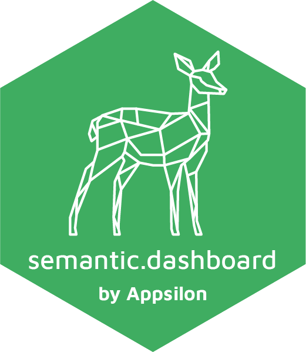

semantic.dashboard 
Quick, beautiful and customizable dashboard template for Shiny based on shiny.semantic and Fomantic UI.
Are you fed up with ordinary shinydashboard look?
Give your app a new fresh look with Fomantic UI support.
library(shiny)
library(shinydashboard) # <-- Change this line to: library(semantic.dashboard)
ui <- dashboardPage(
dashboardHeader(title = "Basic dashboard"),
dashboardSidebar(sidebarMenu(
menuItem(tabName = "home", text = "Home", icon = icon("home")),
menuItem(tabName = "another", text = "Another Tab", icon = icon("heart"))
)),
dashboardBody(
fluidRow(
box(plotOutput("plot1", height = 250)),
box(
title = "Controls",
sliderInput("slider", "Number of observations:", 1, 100, 50)
)
)
)
)
server <- function(input, output) {
set.seed(122)
histdata <- rnorm(500)
output$plot1 <- renderPlot({
data <- histdata[seq_len(input$slider)]
hist(data)
})
}
shinyApp(ui, server)Semantic dashboards comparison
semantic.dashboard offers basic functions for creating dashboard with Fomantic UI.
How to install?
Install shiny.semantic library first. Here you can find how.
You can install a stable version semantic.dashboard from CRAN repository:
install.packages("semantic.dashboard")The development version can be installed from GitHub using remotes.
remotes::install_github("Appsilon/semantic.dashboard")To install previous version you can run:
remotes::install_github("Appsilon/semantic.dashboard", ref = "0.1.0")Example
You can find examples in the examples/ folder of the GitHub repository.
You can check documentation for tutorials.
How to contribute?
If you want to contribute to this project please submit a regular PR, once you’re done with new feature or bug fix. Please check development/README.md first! It contains useful information that will help you run your dev environment for semantic.dashboard.
Troubleshooting
We used the latest versions of dependencies for this library, so please update your R environment before installation.
However, if you encounter any problems, try the following:
- Up-to-date R language environment
- Installing specific dependent libraries versions
- shiny.semantic
Appsilon

Appsilon is a Posit (formerly RStudio) Full Service Certified Partner.
Learn more at appsilon.com.
Get in touch opensource@appsilon.com
Explore the Rhinoverse - a family of R packages built around Rhino!